Alle Längen in mm. Noch keine Maßzahl ist als bestätigt eingetragen.
Aktueller Verwendungszweck: die Originalschnittstelle für D-V03 bestätigen. Schaft und Spitze unten dokumentieren nur den historischen Erdspieß; sie gehören nicht zum neuen Sockel. Neue Sockelparameter und Nachweise: Entscheidungskette.
Bezugssystem der Originalmessung (Vorschlag)
A = Stirnfläche am geschlitzten Rohrende; z zeigt von A entlang der Rohrachse zum anderen Ende. Winkelnull = Mitte des Längsschlitzes. Drehrichtung ausdrücklich mit Blickrichtung angeben. Diese Definition vor dem Modellaufbau gemeinsam bestätigen.
| Parameter | Zu erfassendes Maß | Bildhinweis | Status |
|---|---|---|---|
| tube_length | Gesamtlänge des Rohres | 10 | offen |
| outer_diameter | Außendurchmesser, an mehreren Stellen | 05 | offen |
| inner_diameter | Innendurchmesser an ungeschlitztem Ende | 05 | offen |
| slot_width | Breite des Längsschlitzes | 01, 04, 11, 15 | offen |
| slot_total_depth | Abstand von A bis zum entferntesten Schlitzpunkt, einschließlich Rundung | 04, 11 | offen |
| slot_end_radius | Radius des Schlitzendes | 01, 15 | offen |
| branch_z_min / branch_z_max | Beide axialen Begrenzungen der seitlichen Aussparung ab A | 13, 15 | offen |
| branch_angle | Umfangsausdehnung der seitlichen Aussparung, nicht aus schrägem Foto ableiten | 15 | offen |
| head_diameter | Durchmesser des Gegenstückkopfes | 03, 16 | offen |
| head_length | Axiale Länge des Kopfes | 14 | offen |
| shaft_length | Schaft einschließlich Spitze ab Kopfschulter | 08 | offen |
| shaft_diameter | Durchmesser des dünnen Schafts | 08 | offen |
| tip_length | Länge des konischen Endes | 08 | offen |
| pin_diameter | Durchmesser des radialen Stifts | 09 | offen |
| pin_projection | Überstand ab Mantelfläche des Kopfes | 09 | offen |
| pin_axial_position | Abstand Stiftmitte zu eindeutig benannter Kopfstirnfläche | 02, 14 | offen |
Wandstärke nach bestätigten Durchmessern als (Außendurchmesser − Innendurchmesser)/2 ableiten und möglichst direkt gegenprüfen. Slotradius nicht ungeprüft als halbe Schlitzbreite setzen.
Erste Messrunde
- Rohrlänge.
- Außen- und Innendurchmesser, möglichst mit Messschieber.
- Schlitzbreite und gesamte Schlitztiefe ab A.
- Beide axialen Kanten der seitlichen Aussparung ab A.
- Kopf- und Stiftdurchmesser des Gegenstücks.
Funktionsfragen
- Vorhandenes Teil exakt nachbauen oder verändern?
- Wird der Stift eingeschoben und anschließend verdreht? In welche Richtung, und wie wird unbeabsichtigtes Lösen verhindert?
- Was greift am anderen Rohrende an? Ein Foto der gesamten Fackel-Vorrichtung würde die Schnittstelle klären.
- Besteht Kontakt zu Brennstoff oder relevanter Wärme, oder ist das Rohr nur Teil der Halterung?
- Materialgüte, Oberfläche, Stückzahl und gewünschtes Fertigungsverfahren?
- Welche Kräfte und welches Spiel sind im Betrieb zu erwarten?
Die Linealfotos liefern Hinweise, keine belastbaren Passungsmaße: Perspektive, Nullpunkt und Abstand zwischen Lineal und Bauteil sind zu berücksichtigen.
Bildquellen und Herkunft
16 Originaldateien, 14 unterschiedliche Inhalte. 07 ist bytegleich mit 02; 12 mit 03. Prüfsummen beziehen sich auf die Originale, nicht auf die Vorschauen. Vorschauen: maximal 1000 Pixel Kantenlänge, neu als JPEG gespeichert. Originaldateien bleiben außerhalb dieses Repositories verfügbar; sie wurden nicht verändert.
Foto 10 · Rohrlänge mit Lineal
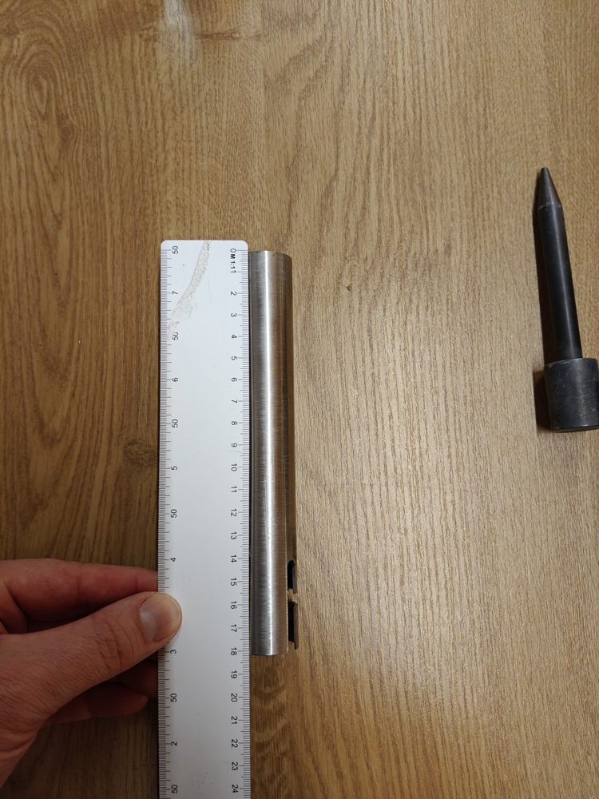
Foto 11 · Schlitztiefe mit Lineal
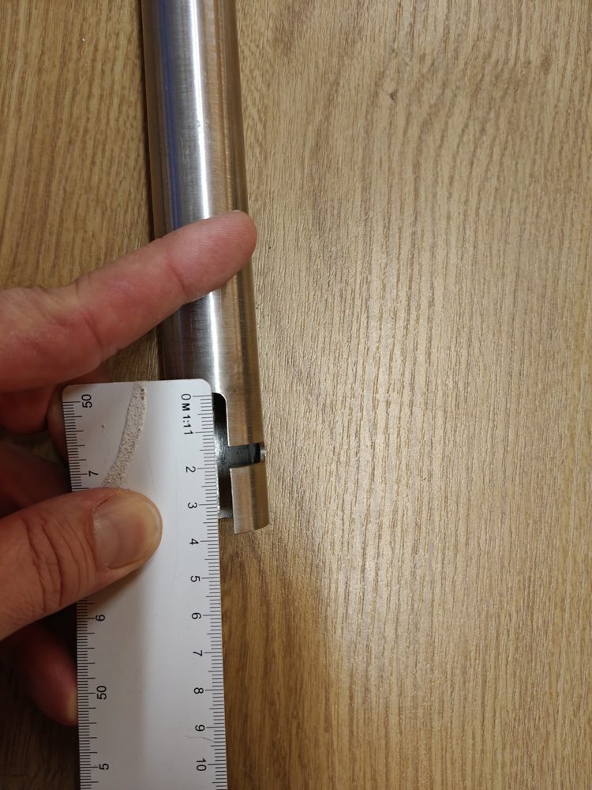
Foto 13 · Seitliche Aussparung mit Lineal
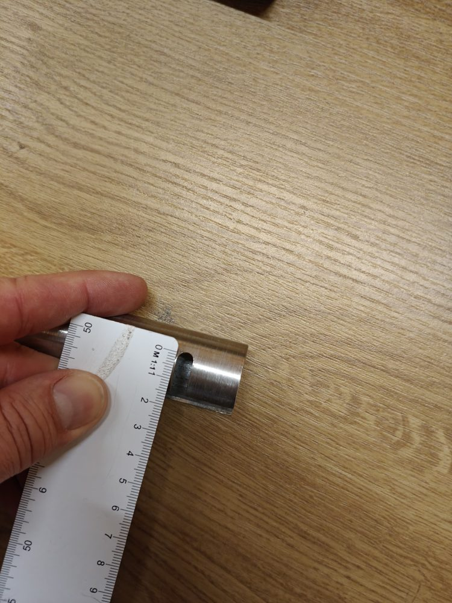
Foto 14 · Kopflänge mit Lineal
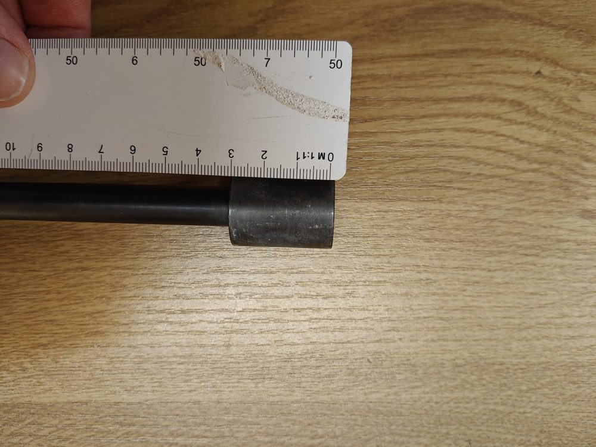
Foto 15 · Rohr und Ausschnitt ohne Gegenstück
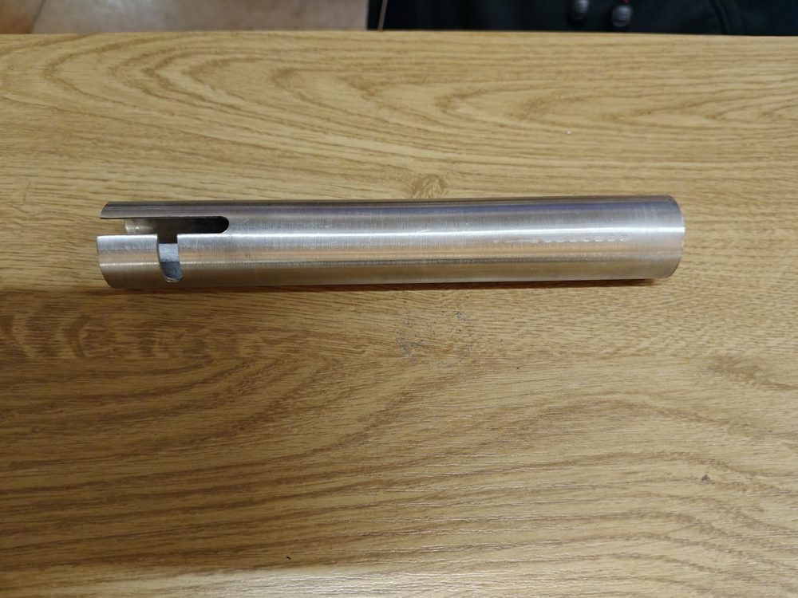
Foto 16 · Kopf mit Lineal aus weiterer Ansicht
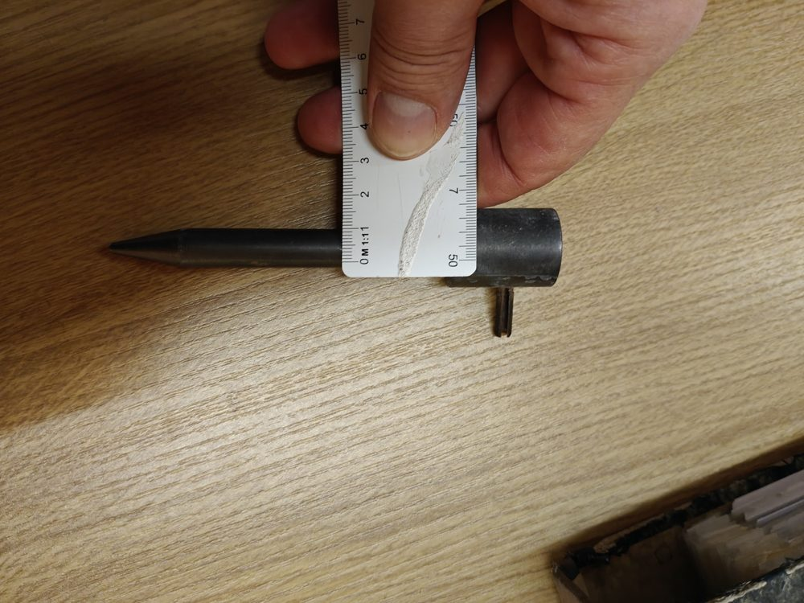
Foto 01 · Montiertes Rohr und Stift
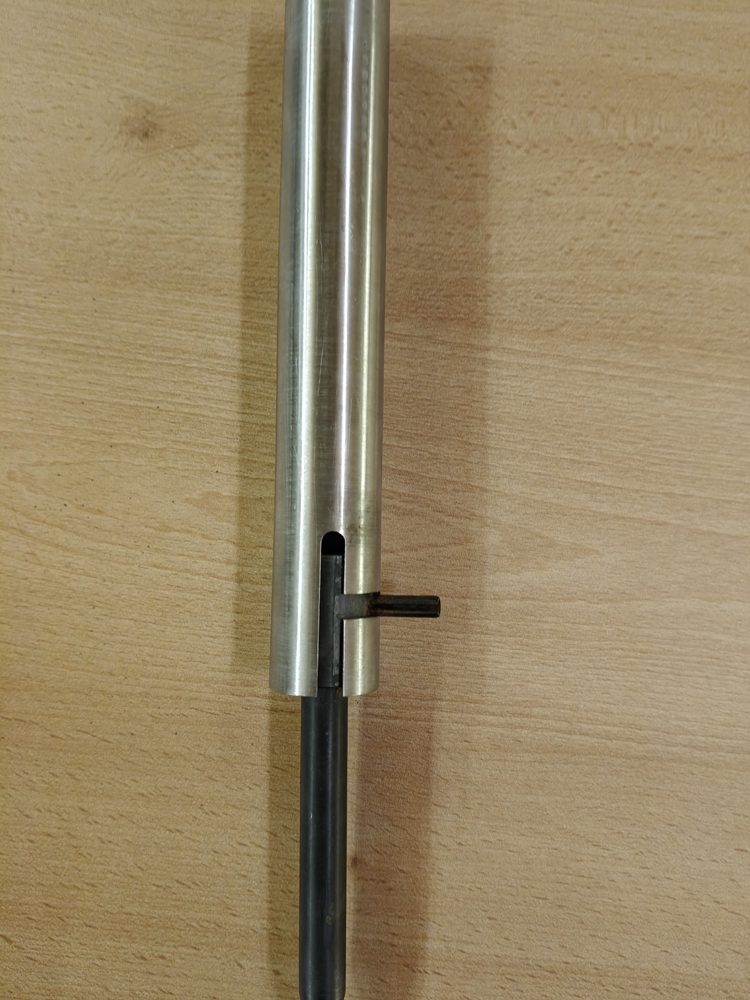
Foto 02 · Separater Erdspieß
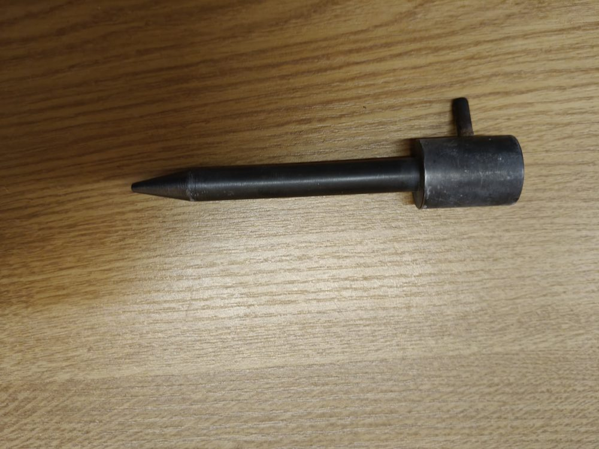
Foto 03 · Kopf mit Lineal
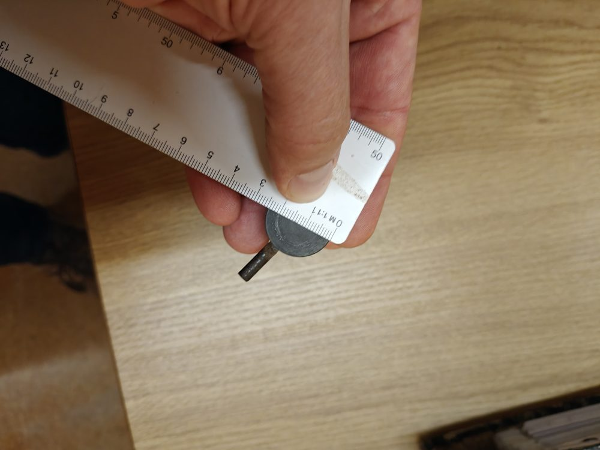
Foto 04 · Schlitzbereich mit Lineal
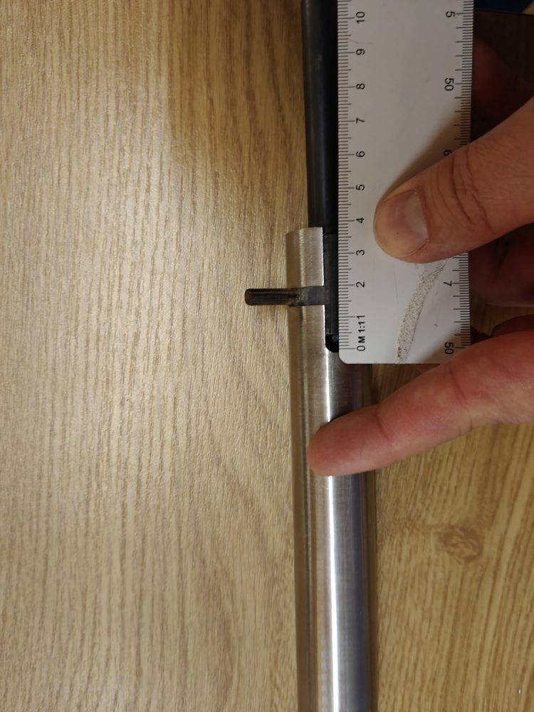
Foto 05 · Rohrstirnseite mit Lineal
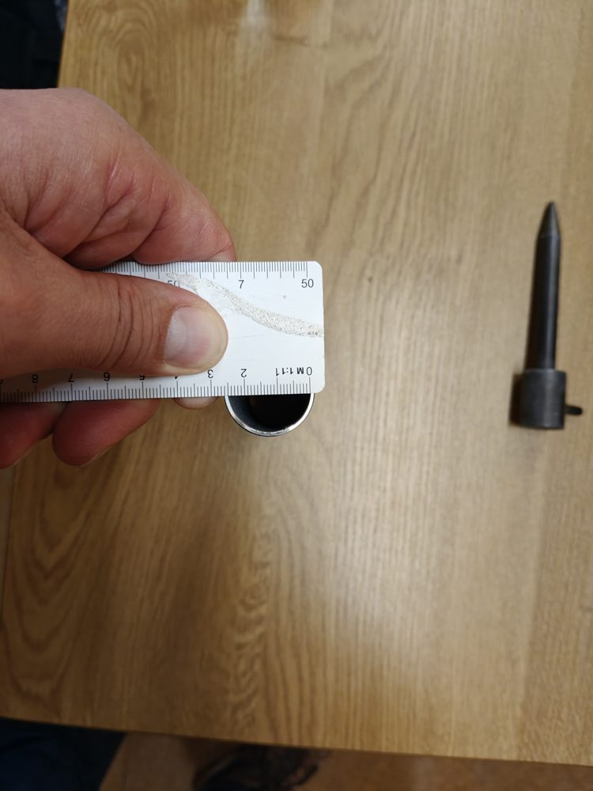
Foto 06 · Rohr und Erdspieß nebeneinander
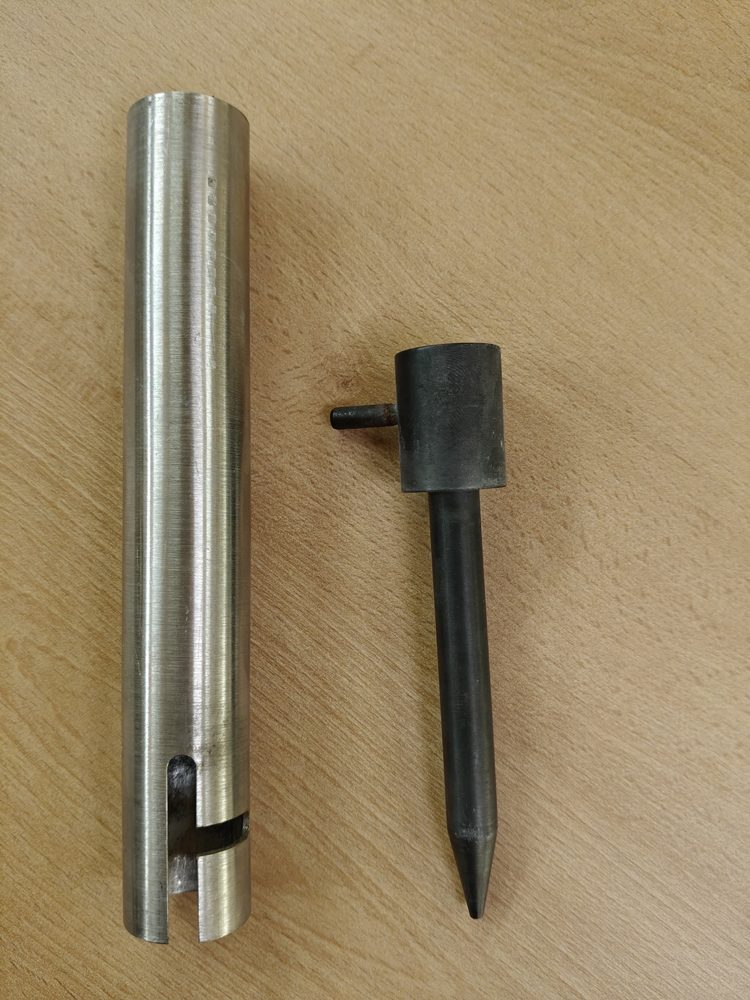
Foto 08 · Erdspieß mit Längenvergleich
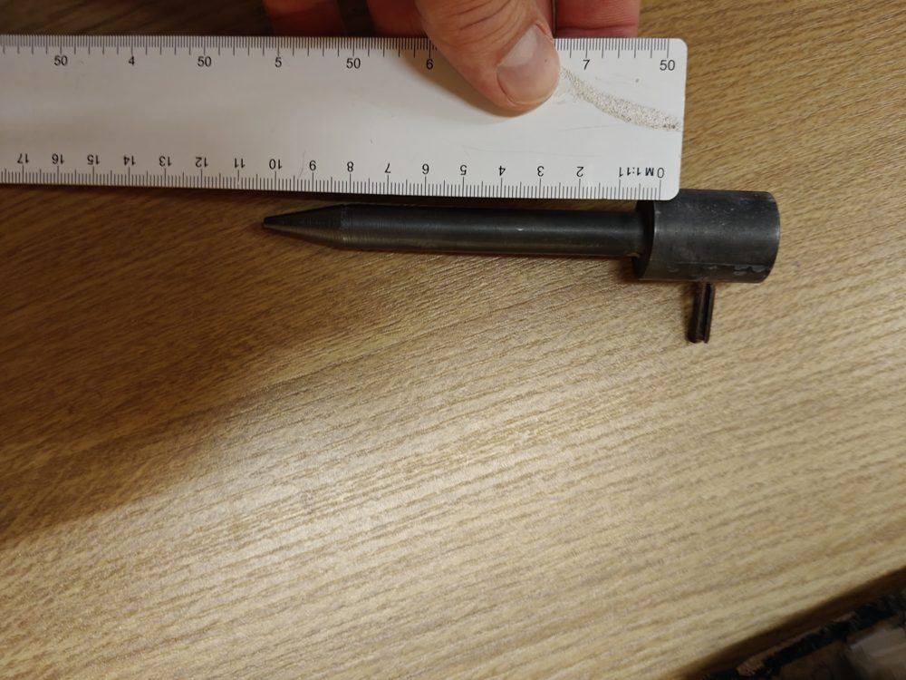
Foto 09 · Radialer Stift mit Lineal
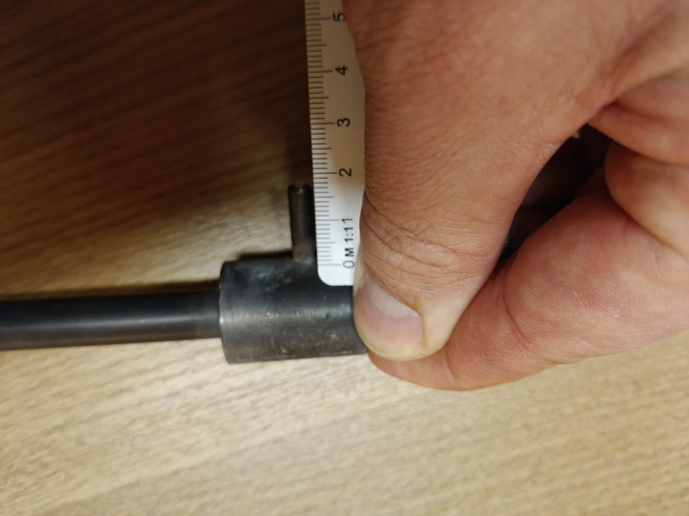